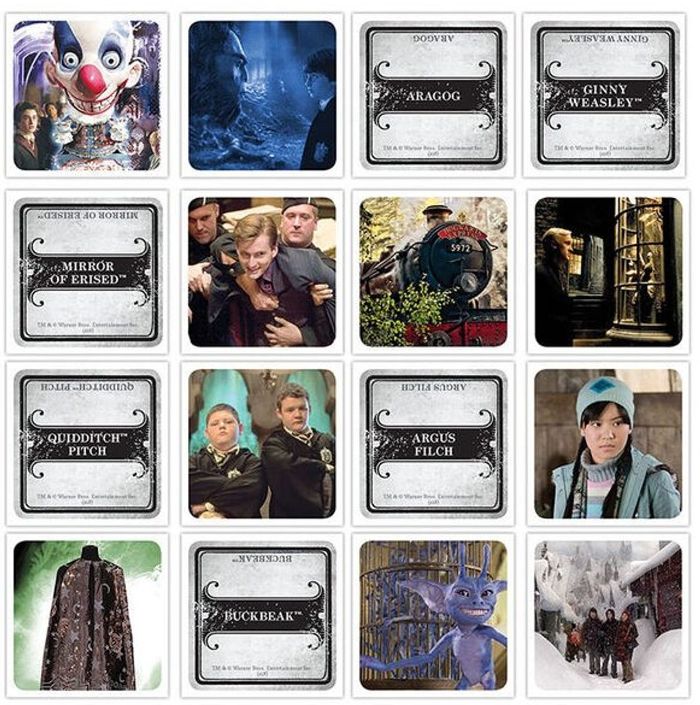

Vydavatel Czech Games Edition (CGE) oznámil edici „Codenames: Back to Hogwarts“, z níž budou 100% zisku věnovány transgender charitativním organizacím. Tato rozhodnutí přichází jako odpověď na kritiku spojenou s licencí značky Hogwarts. Nová edice kombinuje populární slovní hru Codenames s motivy světa Harry Potter a přináší tematické karty, ilustrace i balení zaměřené na fanoušky obou značek.
Generální ředitel CGE uvedl: „Cítíme zodpovědnost vůči našim hráčům i komunitě. Chceme, aby naše hry byly více než jen zábava - byly součástí pozitivní změny.“ Nová edice tak neslouží jen jako sběratelský kousek, ale i jako projev firemních hodnot.
Hra vyjde v předprodeji na podzim 2025, limitované množství edice je určeno pro fanoušky deskových i karetních her. CGE doporučuje objednání včas, protože počet kusů bude omezen.
Tímto krokem CGE potvrzuje, že deskové a karetní hry mají nejen komunitní, ale i společenský rozměr - mohou reagovat na aktuální témata a přinášet obsah, který jde nad rámec samotné hry.